13 critérios verificados (CA01–CA09 da HU, mais CA05b, CA08b e CA09b derivados na spec, mais a RN08/§16). 9 evidenciados no navegador dirigindo o Admin e o Painel do Tenant reais, 3 pela suíte automatizada (48 testes Pest verdes) e 1 de forma combinada. Nenhum critério reprovado. Complemento de 04/09/2026: com a Fase F1 do prontuário entregue (registro, histórico e apuração de atendimentos), os CA05, CA06 e CA07 — que na captura original só podiam ser evidenciados pelo contrato, por ausência da tela consumidora — passaram a ser verificados de ponta a ponta na interface, em comportamento de produção.
| CA | Critério | Status |
|---|---|---|
| CA01 | Lista disponível com os códigos do instrumento | ATENDIDO · navegador |
| CA02 | Regra de apuração visível em cada tipo | ATENDIDO · navegador |
| CA03 | Tipo sem regra de apuração específica | ATENDIDO · navegador |
| CA04 | Código não é gerado automaticamente | ATENDIDO · navegador |
| CA05 | Tipo em uso não é excluído | ATENDIDO · navegador + automatizado |
| CA05b | Exclusão em massa também respeita o uso (derivado, spec §5.1) | ATENDIDO · automatizado |
| CA06 | Tipo inativado sai dos lançamentos novos | ATENDIDO · navegador |
| CA07 | Tipo inativado continua no histórico e na apuração | ATENDIDO · navegador |
| CA08 | Município não edita a lista | ATENDIDO · automatizado |
| CA08b | Escrita negada ao guard client no backend (derivado, spec §5.1) | ATENDIDO · automatizado |
| CA09 | Alteração auditada | ATENDIDO · navegador + automatizado |
| CA09b | Inativação em massa é auditada (derivado, spec §5.1) | ATENDIDO · automatizado |
| RN08/§16 | Somente o Administrador mantém; o Operacional Global consulta | ATENDIDO · navegador |
Critério (Gherkin): Dado que sou Administrador no Painel de Administração Global Quando eu consultar o cadastro de tipos de atendimento Então vejo os oito tipos do instrumento, com os códigos 1 a 7 e 9 E não existe um tipo de código 8.
Como foi testado: Login como Administrador (CPF 620.174.905-55), aceite dos documentos legais, e navegação para /app/attendance-types pelo menu lateral (Tipos de Atendimento, ao lado de Formas de Ingresso).
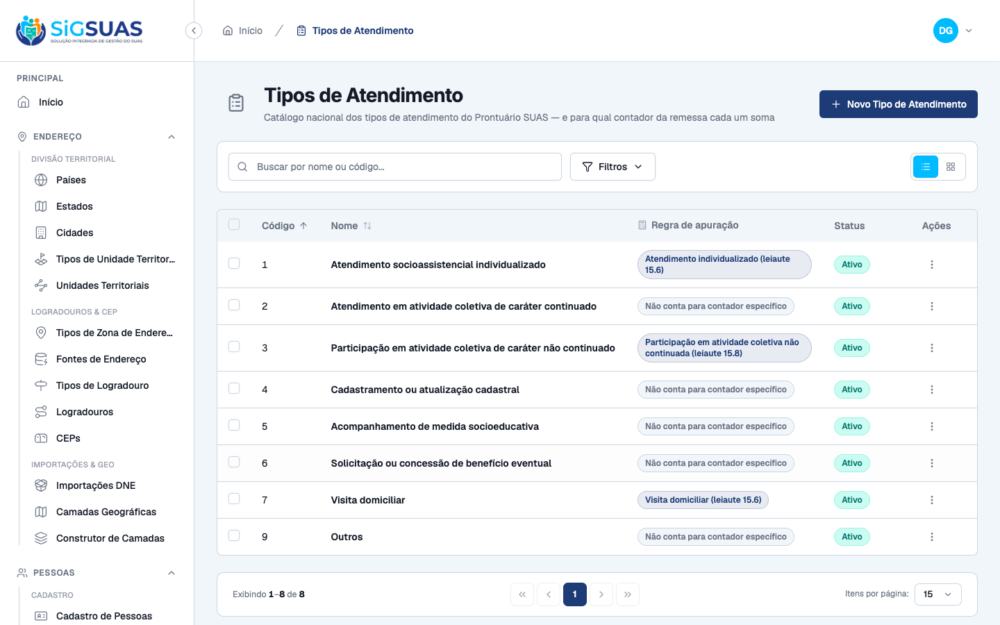
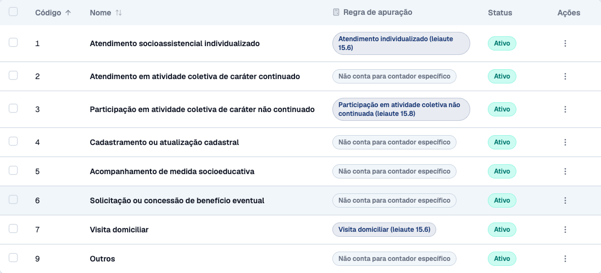
Critério (Gherkin): Dado que estou consultando o tipo "Atendimento socioassistencial individualizado" Quando eu abrir o detalhe dele Então vejo que ele conta como atendimento individualizado para a remessa E o tipo "Visita domiciliar" conta como visita domiciliar E o tipo "Participação em atividade coletiva de caráter não continuado" conta como participação em atividade coletiva não continuada.
Como foi testado: Leitura da coluna Regra de apuração na listagem e abertura do formulário de edição, onde o campo é um select com as opções nomeadas.
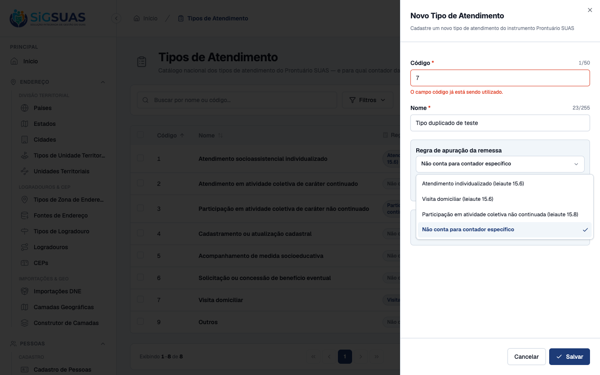
Critério (Gherkin): Dado que estou consultando o tipo "Outros" Quando eu abrir o detalhe dele Então ele não conta para nenhum contador específico E continua somando no total de atendimentos da unidade.
Como foi testado: Verificação do tipo 9 — Outros na listagem e no formulário de edição.
Critério (Gherkin): Dado que estou cadastrando um tipo Quando eu informar os dados Então o código é informado por mim, não gerado pelo sistema E o sistema recusa código já utilizado por outro tipo.
Como foi testado: Clique em Novo Tipo de Atendimento; inspeção do campo Código ao abrir; preenchimento com o código 7 (já usado por “Visita domiciliar”) e tentativa de salvar.
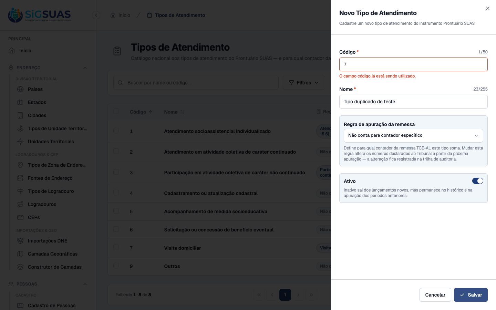
Critério (Gherkin): Dado que o tipo "Visita Domiciliar" já foi usado em atendimentos registrados Quando eu tentar excluí-lo Então a exclusão é recusada E o sistema indica que ele pode ser inativado.
Como foi testado: Duas frentes. (a) Na tela, em comportamento de produção (complemento de 04/09/2026): com um atendimento registrado usando o tipo 9 — Outros, tenta-se excluí-lo pelo Painel Global (menu de ações → Excluir → confirmar). (b) Na suíte Pest, com um consumidor de teste registrado no AttendanceTypeUsageService, cobrindo também o caminho sem uso e o bulk.
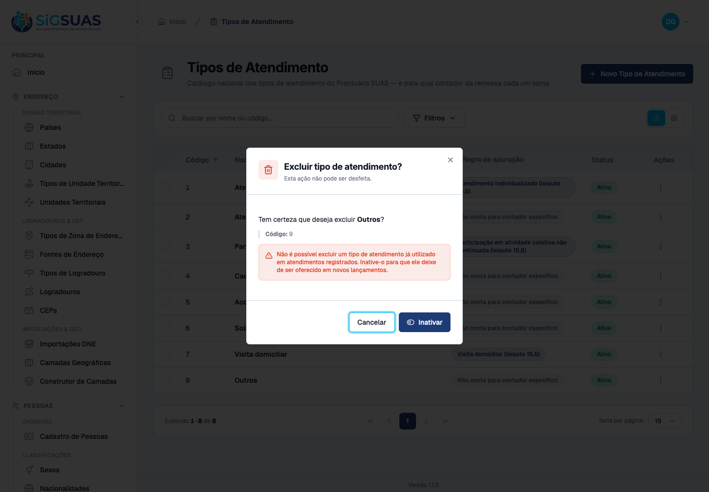
Critério (Gherkin): Dado que selecionei três tipos, um deles já usado em atendimentos Quando eu confirmar a exclusão em massa Então nenhum dos três é excluído E o sistema identifica qual deles está em uso.
Como foi testado: Coberto por Pest, pelo mesmo motivo do CA05.
Evidência por cobertura automatizada — ver Anexo.
Critério (Gherkin): Dado que inativei o tipo "Outros" Quando um profissional registrar um atendimento novo no Painel do Tenant Então esse tipo não é oferecido.
Como foi testado: Ciclo completo antes → inativação → depois na tela real (complemento de 04/09/2026, com a aba de Atendimentos já entregue): (1) no Painel do Tenant, prontuário da família 9900000001 → aba Atendimentos → Registrar atendimento → abrir o select Tipo de atendimento; (2) no Painel Global, inativar o tipo 9 — Outros (menu de ações → Inativar); (3) de volta ao Painel do Tenant, recarregar e reabrir o mesmo select.
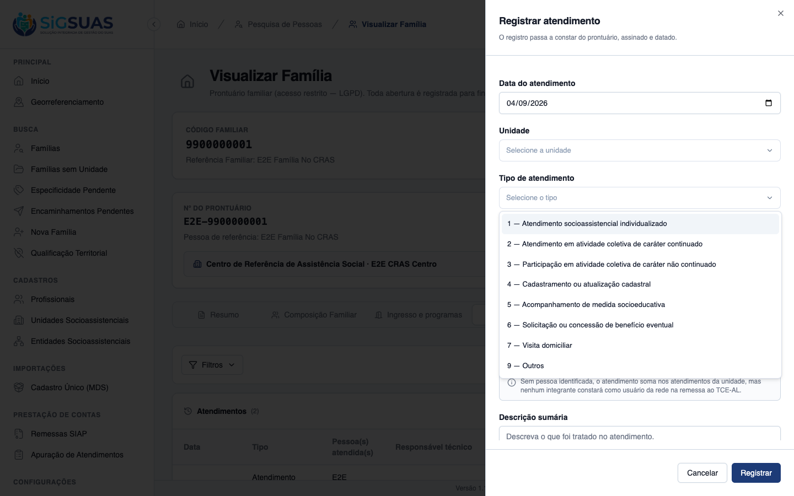
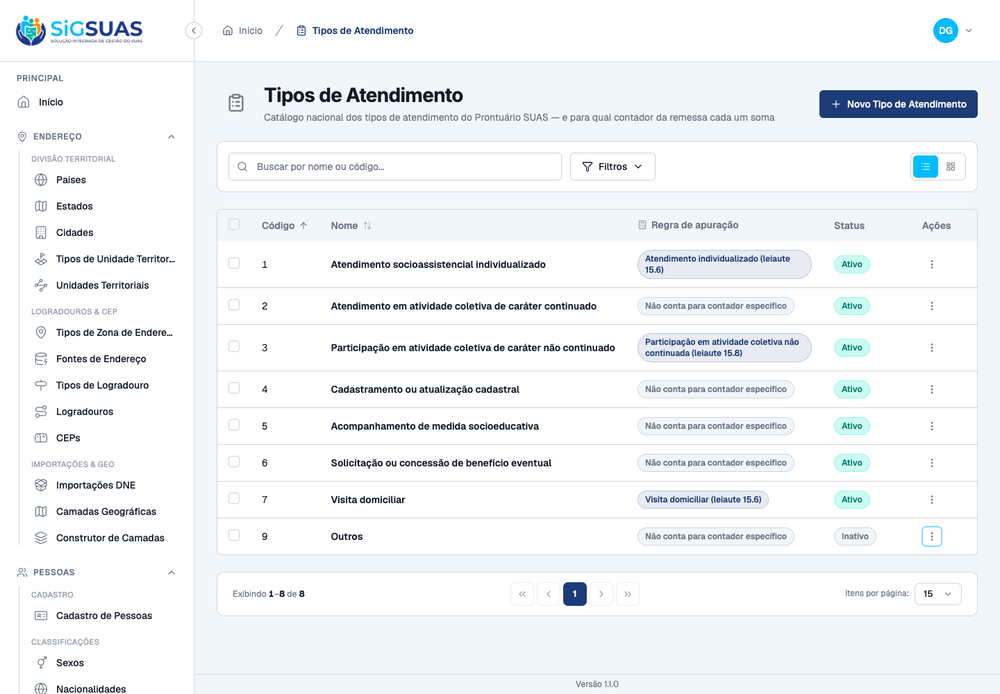
Critério (Gherkin): Dado que existem atendimentos registrados com o tipo "Outros" antes da inativação Quando eu consultar o histórico e a apuração daquele período Então esses atendimentos continuam listados com esse tipo E continuam somando no total de atendimentos.
Como foi testado: Com o tipo 9 — Outros ainda ativo, registra-se um atendimento em 04/09/2026 na unidade E2E CRAS Centro, com pessoa atendida identificada. Em seguida o tipo é inativado no Painel Global e consultam-se, no Painel do Tenant, (1) o histórico da aba Atendimentos e (2) a tela Prestação de Contas → Apuração de Atendimentos no mesmo período.
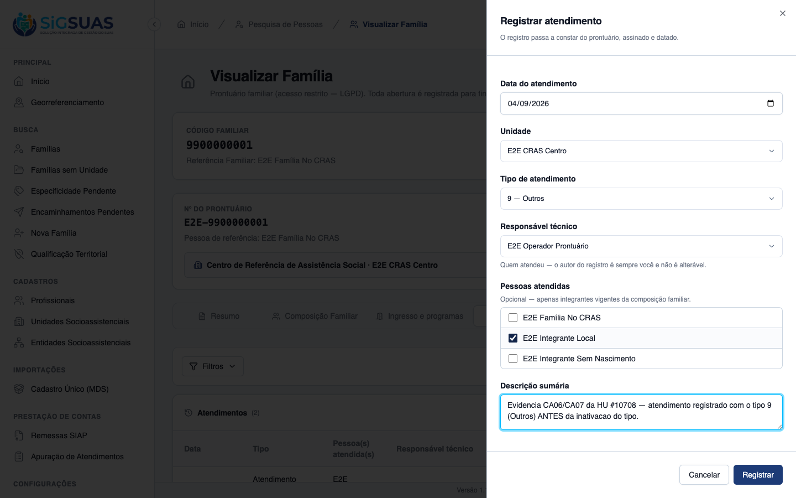
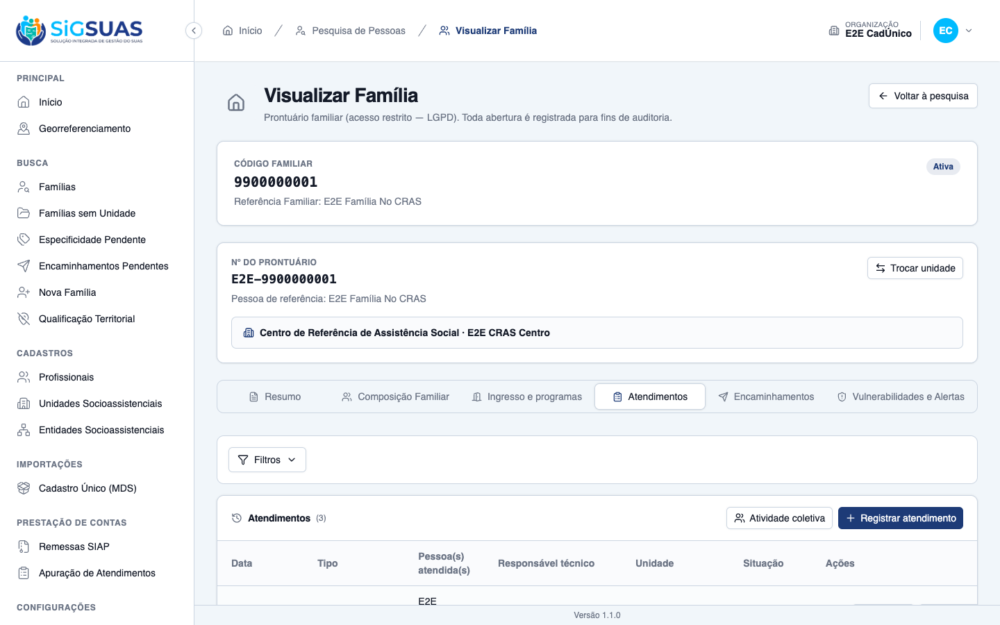
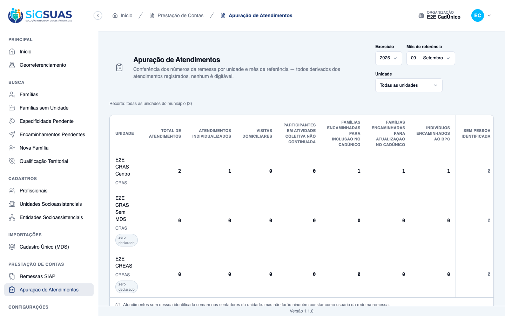
Critério (Gherkin): Dado que sou Master no Painel do Tenant Quando eu procurar onde alterar os tipos de atendimento Então a ação não existe para mim E a lista é apresentada apenas para escolha no registro de atendimento.
Como foi testado: Coberto por Pest e pela conferência do contrato de permissões no banco real. O cadastro não existe no frontend do tenant — as rotas de escrita vivem apenas em manager.php, sob auth:manager.
Evidência por cobertura automatizada — ver Anexo.
Critério (Gherkin): Dado que estou autenticado com um token do guard `client` Quando eu chamar POST /api/attendance-types Então a requisição é recusada pela autenticação (401) E nenhum registro é criado.
Como foi testado: Coberto por Pest, cobrindo as 7 rotas de escrita/trilha do guard manager.
Evidência por cobertura automatizada — ver Anexo.
Critério (Gherkin): Dado que alterei a regra de apuração de um tipo Quando eu consultar a trilha de auditoria Então a alteração consta registrada, com autor e data.
Como foi testado: Alteração real pela tela: tipo 9 — Outros teve a regra de apuração mudada de “Não conta para contador específico” para “Atendimento individualizado (leiaute 15.6)”, seguida de consulta ao activity_log.
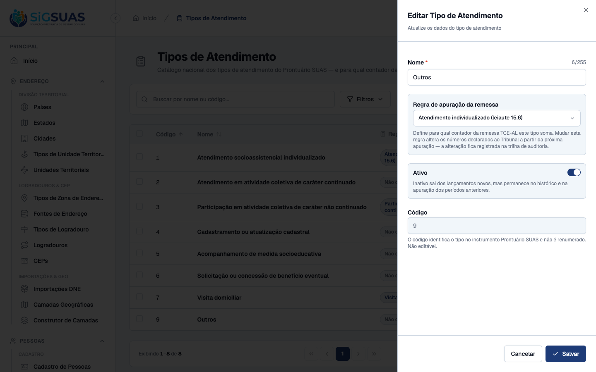
Critério (Gherkin): Dado que inativei quatro tipos de uma vez Quando eu consultar a trilha Então consta um registro de inativação em massa, com autor, data e os itens afetados.
Como foi testado: Coberto por Pest. Não é evidenciável por tela — ver a ressalva sobre o log de operações em massa.
Evidência por cobertura automatizada — ver Anexo.
Critério (Gherkin): Dado que sou Operacional Global no Painel de Administração Global Quando eu abrir o cadastro de tipos de atendimento Então vejo a lista E não vejo nenhuma ação de escrita.
Como foi testado: Segunda sessão de navegador, login como Operacional Global (CPF 731.285.016-29), navegação para /app/attendance-types e inspeção da visibilidade real dos controles (display e offsetParent).
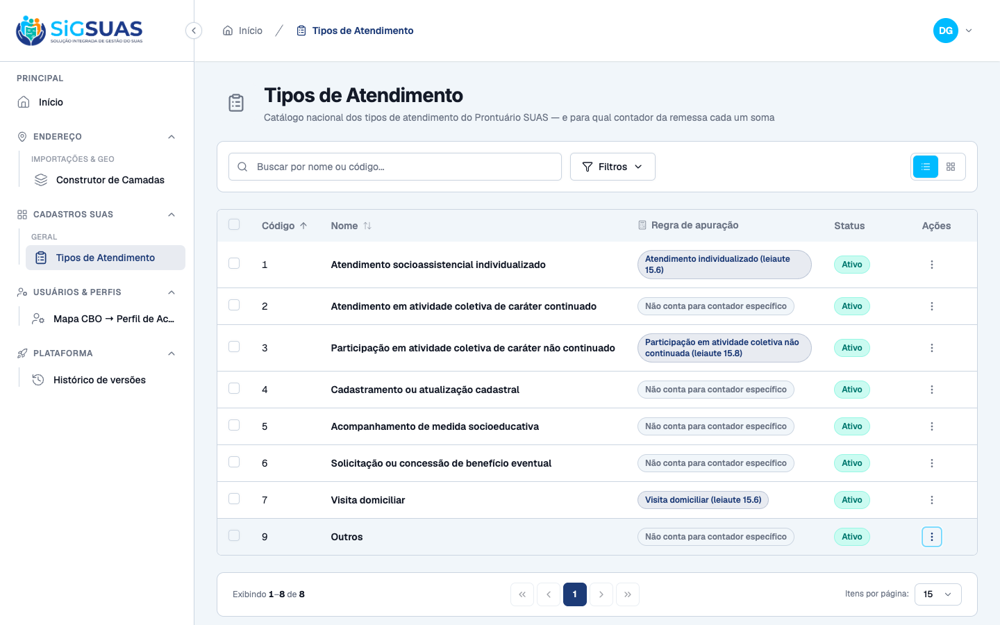
AttendanceTypeUsageService nasceu com a lista de consumidores protegida por Schema::hasTable(), e a HU de Registro de Atendimento fecharia o CA05 acrescentando uma linha, sem reescrever o destroy.attendances e acrescentou a entrada ['table' => 'attendances', 'column' => 'attendance_type_id'] ao registro de consumidores. Portanto a ressalva anterior — “hoje, na tela, uma exclusão sempre é permitida, porque não há atendimento algum que possa bloquear” — está superada: a trava do CA05 é comportamento de produção, e foi evidenciada na tela neste complemento. Pelo mesmo motivo, CA06 e CA07 deixaram de ser verificados apenas pelo contrato e passaram a ser dirigidos no Painel do Tenant real./activity lê por subject — o registro existe e nenhuma API o devolve.A versão inicial da spec (§9.4) mostrava o de→para da auditoria em activity_log.properties. Está errado nesta base, e a captura do CA09 confirmou empiricamente: properties voltou [] e o de→para veio em attribute_changes. O spatie/laravel-activitylog 5.0.0 grava as mudanças automáticas do trait em coluna própria, reservando properties aos logs manuais. A spec foi corrigida e o frontend já lê a coluna certa.
O volume do PostgreSQL local era de 2026-06-23 e não continha o role nem o banco que o .env esperava, além de DB_HOST apontar para um host inexistente na rede do compose. O caminho não destrutivo foi adotado (criação do role e do banco, preservando os bancos existentes), seguido de migrate --force (22 migrations pendentes, incluindo a desta HU) e da semeadura dos tipos, papéis e permissões.
remittance_counter = null. Alinhar numa próxima HU.v-can: o Operacional Global vê a afordância, embora o backend responda 403 e a tela reverta o estado. É débito do molde — o mesmo trecho existe em family-intake-forms — e corrigi-lo só aqui esconderia o problema no vizinho.RESTRICT não protege soft delete (só bloqueia DELETE físico), e rodar a checagem dentro da transação encurta a janela TOCTOU sob READ COMMITTED, não a fecha. Anotado no contrato da HU de Registro de Atendimento.9 — Outros e inativar/reativar esse tipo. Ao final, a baseline do ambiente E2E foi restaurada: o tipo 9 voltou a is_active = true (pela própria tela, menu de ações → Ativar) e o atendimento criado para a evidência foi removido, deixando os 2 atendimentos originais da semeadura. Conferido no banco: 8 tipos, nenhum excluído, attendances = 2.PASS Tests\Unit\Models\AttendanceTypeTest ✓ it has correct fillable, casts and defaults 0.90s ✓ it uses soft deletes, HasUuid, LogsActivity and resolves by uuid 0.10s ✓ it is a GLOBAL lookup — never tenant-scoped (RN04/RN10) 0.03s ✓ it has no global scope of is_active — history and remittance never… 0.03s ✓ it keeps the remittance rule as data, cast to the enum (RN03/D03) 0.03s ✓ it accepts NULL as a legitimate remittance counter value (CA03) 0.03s ✓ it enforces unique code — even against soft-deleted rows (RN02) 0.03s ✓ it configures the activity log with the audited fields (RN07/§14) 0.02s PASS Tests\Feature\Api\AttendanceTypeControllerTest ✓ it lists attendance types exposing uuid and the remittance rule — n… 0.11s ✓ it shows the remittance counter with its label (CA02) 0.03s ✓ it shows NULL counter as an explicit "no specific counter" label (C… 0.08s ✓ it creates an attendance type with the code informed by the admin (… 0.06s ✓ it rejects a duplicate code (CA04) 0.03s ✓ it requires code and name — the code is never generated (CA04) 0.03s ✓ it rejects a remittance counter outside the enum 0.03s ✓ it audits the change of the remittance rule with old and new values… 0.03s ✓ it exposes the audit trail with causer and pagination (CA09) 0.03s ✓ it soft deletes an attendance type 0.03s ✓ it bulk deactivates and bulk activates attendance types, logging th… 0.03s ✓ it filters actives for the new-entry select, and returns inactives… 0.03s ✓ it filters by remittance_counter 0.03s ✓ it blocks write without permission 0.03s ✓ it refuses to delete a type in use with 422, guiding deactivation (… 0.03s ✓ it still soft deletes a type NOT referenced by any consumer (CA05) 0.03s ✓ it ignores a registered consumer whose table does not exist yet (D0… 0.04s ✓ it bulk destroy is ATOMIC: one item in use blocks all and is identi… 0.04s ✓ it rejects soft-deleted uuids in every bulk action at validation ti… 0.04s ✓ it bulk destroys unused types, logging the bulk event with author (… 0.04s ✓ it gives the admin_operador read-only access — every write is 403 (… 1.56s ✓ it lets the ADMIN role exercise all eight abilities end to end 1.37s ✓ it rejects client-guard tokens on every write route with 401, creat… 0.04s ✓ it keeps the shared read alive for the client guard — the tenant se… 0.03s PASS Tests\Feature\Seeders\AttendanceTypeSeederTest ✓ it seeds the eight attendance types of the instrument — codes 1..7… 0.04s ✓ it carries the remittance rule of RN03 as data — three counters, fi… 0.03s ✓ it is idempotent — running the seeder twice does not duplicate nor… 0.03s Tests: 35 passed (166 assertions) Duration: 5.78s ===== SyncPermissionsTest (contrato de permissoes — CA08/RN08) ===== PASS Tests\Feature\Console\SyncPermissionsTest ✓ it extracts the can: abilities declared by controllers from the rou… 0.49s ✓ it keeps full parity with the previous hardcoded permission set (no… 0.03s ✓ it seeds permissions for both guards and assigns them to roles 1.45s ✓ it runs permissions:sync idempotently without duplicating permissio… 3.36s ✓ it prunes orphan permissions not present in the registry 5.39s ✓ it does not write anything on --dry-run 0.13s ✓ it does not assign RESTRICTED_PERMISSIONS to any role 1.52s ✓ it permissions:sync --coverage fails when an authenticated route ha… 1.43s ✓ it never mirrors any platform-versions ability into the client guar… 1.54s ✓ it never mirrors any cbo-access-profiles ability into the client gu… 1.59s ✓ it grants the Operacional Global read-only access to the CBO map (H… 1.80s ✓ it keeps attendance-types write abilities out of the client guard r… 1.98s ✓ it grants the Operacional Global read-only access to attendance typ… 1.54s Tests: 13 passed (115 assertions) Duration: 22.82s